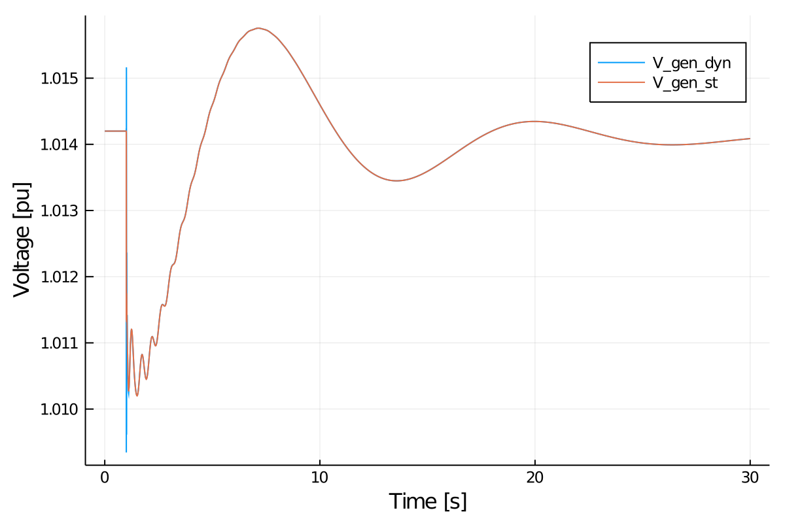
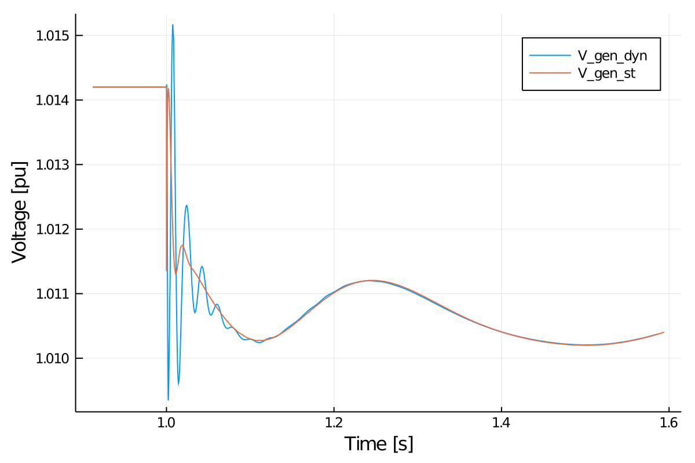

Tutorial: Dynamic Lines
This tutorial will introduce an example of considering dynamic lines in PowerSimulationsDynamics. Note that this tutorial is for PowerSimulationsDynamics.
This tutorial presents a simulation of a three-bus system, with an infinite bus (represented as a voltage source behind an impedance) at bus 1, a one d- one q- machine on bus 2 and an inverter of 19 states, as a virtual synchronous machine at bus 3. The perturbation will be the trip of two of the three circuits (triplicating its resistance and impedance) of the line that connects bus 1 and bus 3. This case also consider a dynamic line model for connection between buses 2 and 3. We will compare it against a system without dynamic lines.
It is recommended to check Tutorial 1: OMIB first, since that includes more details and explanations on all definitions and functions.
This tutorial can be found on PowerSimulationsDynamics/Examples repository.
Step 1: Package Initialization
using PowerSimulationsDynamics
using PowerSystems
using Sundials
const PSY = PowerSystemsStep 2: Data creation
We will load two systems already defined in Tutorial 0:
threebus_sys = System("threebus_sys.json")In addition, we will create a new copy of the system on which we will simulate the same case, but will consider dynamic lines:
threebus_sys_dyn = deepcopy(threebus_sys)Step 3: Create the fault and simulation on the Static Lines system
First, we construct the perturbation, by properly computing the new Ybus on the system:
#Make a copy of the original system
sys2 = deepcopy(threebus_sys)
#Triplicates the impedance of the line named "1"
fault_branches = get_components(ACBranch, sys2)
for br in fault_branches
if get_name(br) == "1"
br.r = 3 * br.r
br.x = 3 * br.x
b_new = (from = br.b.from / 3, to = br.b.to / 3)
br.b = b_new
end
end
#Obtain the new Ybus
Ybus_fault = Ybus(sys2).data
#Define Fault: Change of YBus
Ybus_change = PowerSimulationsDynamics.ThreePhaseFault(
1.0, #change at t = 1.0
Ybus_fault, #New YBus
)Now, we construct the simulation:
#Time span of our simulation
tspan = (0.0, 30.0)
#Define Simulation
sim = Simulation(
pwd(), #folder to output results
threebus_sys, #system
tspan, #time span
Ybus_change, #Type of perturbation
)We can obtain the initial conditions as:
#Will print the initial states. It also give the symbols used to describe those states.
print_device_states(sim)
#Will export a dictionary with the initial condition values to explore
x0_init = get_initial_conditions(sim)Step 4: Run the simulation of the Static Lines System
#Run the simulation
run_simulation!(sim, #simulation structure
IDA(), #Sundials DAE Solver
dtmax = 0.02, #Maximum step size
)Step 5: Store the solution
series2 = get_voltagemag_series(sim, 102)
zoom = [
(series2[1][ix], series2[2][ix])
for (ix, s) in enumerate(series2[1]) if (s > 0.90 && s < 1.6)
];Step 3.1: Create the fault and simulation on the Dynamic Lines system
An important aspect to consider is that DynamicLines must not be considered in the computation of the Ybus. First we construct the Dynamic Line, by finding the Line named "3", and then adding it to the system.
# get component return the Branch on threebus_sys_dyn named "3"
dyn_branch = DynamicBranch(get_component(Branch, threebus_sys_dyn, "3"))
# Adding a dynamic line will inmediately remove the static line from the system.
add_component!(threebus_sys_dyn, dyn_branch)Similarly, we construct the Ybus fault by creating a copy of the original system, but removing the Line "3" to avoid considering it in the Ybus:
#Make a copy of the original system
sys3 = deepcopy(threebus_sys)
#Remove Line "3"
remove_component!(Line, sys3, "3")
#Triplicates the impedance of the line named "1"
fault_branches2 = get_components(Line, sys3)
for br in fault_branches2
if get_name(br) == "1"
br.r = 3 * br.r
br.x = 3 * br.x
b_new = (from = br.b.from / 3, to = br.b.to / 3)
br.b = b_new
end
end
#Obtain the new Ybus
Ybus_fault_dyn = Ybus(sys3).data
#Define Fault: Change of YBus
Ybus_change_dyn = PowerSimulationsDynamics.ThreePhaseFault(
1.0, #change at t = 1.0
Ybus_fault_dyn, #New YBus
)Step 4.1: Run the simulation of the Dynamic Lines System
#Run the simulation
run_simulation!(sim, #simulation structure
IDA(), #Sundials DAE Solver
dtmax = 0.02, #Maximum step size
)Now, we construct the simulation:
#Time span of our simulation
tspan = (0.0, 30.0)
#Define Simulation
sim_dyn = Simulation(
pwd(), #folder to output results
threebus_sys_dyn, #system
tspan, #time span
Ybus_change_dyn, #Type of perturbation
)We can obtain the initial conditions as:
#Will print the initial states. It also give the symbols used to describe those states.
print_device_states(sim_dyn)
#Will export a dictionary with the initial condition values to explore
x0_init_dyn = get_initial_conditions(sim_dyn)Step 5.1: Store the solution
series2_dyn = get_voltagemag_series(sim_dyn, 102)
zoom_dyn = [
(series2_dyn[1][ix], series2_dyn[2][ix])
for (ix, s) in enumerate(series2_dyn[1]) if (s > 0.90 && s < 1.6)
];Step 6.1: Compare the solutions:
We can observe the effect of Dynamic Lines
using Plots
plot(series2_dyn, label="V_gen_dyn")
plot!(series2, label="V_gen_st", xlabel="Time [s]", ylabel = "Voltage [pu]")
⠀ that looks quite similar. The differences can be observed in the zoom plot:
plot(zoom_dyn, label="V_gen_dyn")
plot!(zoom, label="V_gen_st", xlabel="Time [s]", ylabel = "Voltage [pu]")
⠀